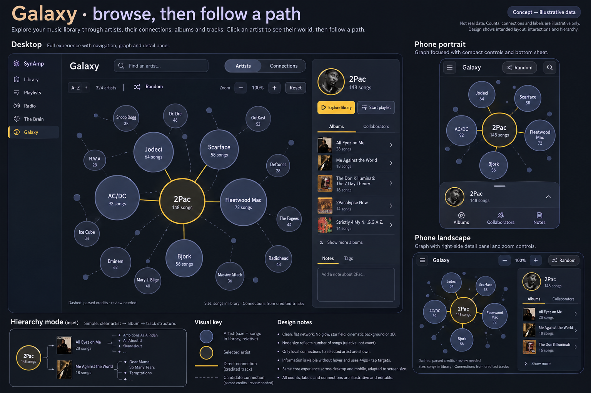
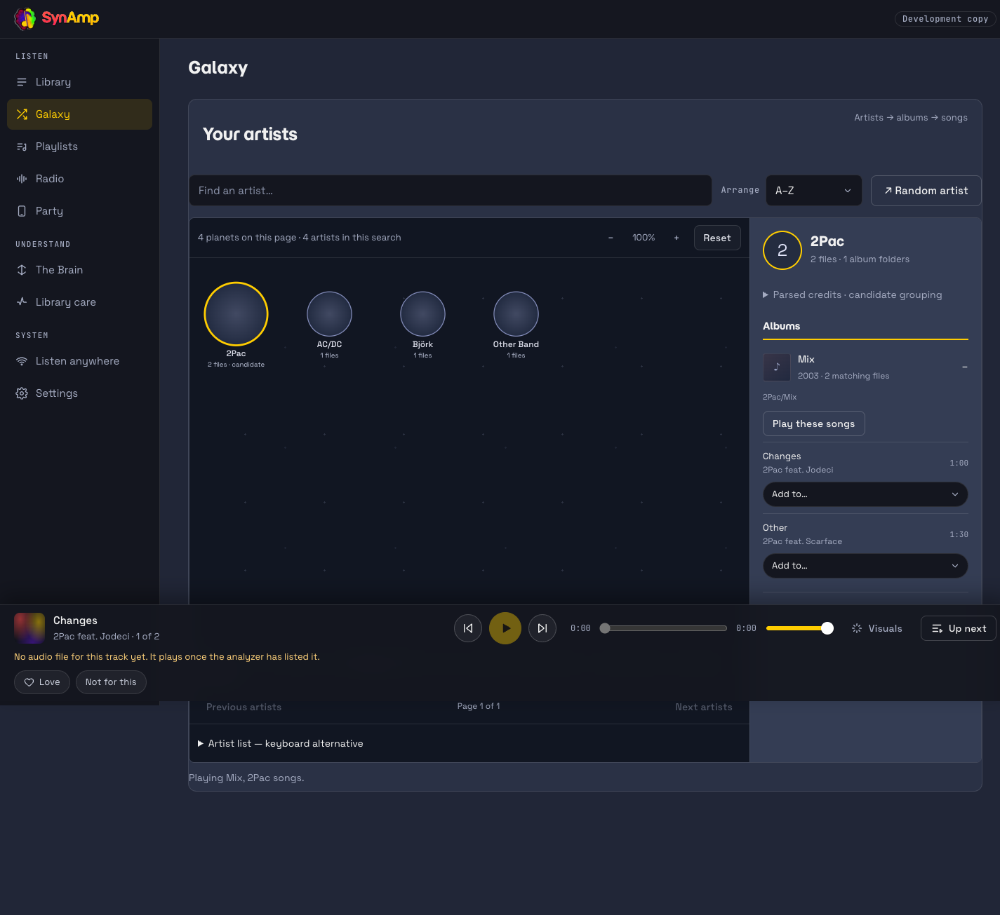

SynAmp research library · October 7, 2026
Your music library,
with room to explore.
Album identity, precise library views, and a Galaxy for rediscovering the music you already own.
Private working research Local implementation
Research library · Canonical implementation plan · Initial verification · Current workspace/table verification
The repeated albums are real folder fragments.
A read-only exported snapshot contains 46,117 track records, 5,597 artist-credit labels and 8,387 folder album groups. Album Artist is present on only 22.235% of tracks; a MusicBrainz release ID is present on 0.284%. These are file and label counts, not verified unique recordings or people.
“Dirty Harry, Green Lantern, &” spans 34 tracks in 19 folders, with no Album Artist or release ID. Some of those credits belong outside the 2Pac family. SynAmp groups albums by folder, so those rows are consistent with the current storage. The user's later Brave analysis counter (10,299 / 47,117) describes newer live progress, not this earlier export.
Private census and limitations · Hash, timestamps and bounded examples. No audio, live tags, music folders or analyzer stores were changed.
One release; every performer still credited.
Separate release identity from track credits. A 2Pac release can have one reviewed Album Artist while each song retains its featured names. Joint collaboration albums can keep a joint album credit. Multi-artist soundtracks can use Various Artists plus compilation/release metadata; a single-artist soundtrack should retain its artist.
| Option | What it solves | What must be reviewed |
|---|---|---|
| Consistent Album Artist | Album ownership stays stable across track-level collaborations. | Edition, release and joint album credit; do not overwrite track Artist. |
| Explicit multiple artists | Each performer becomes browsable, while the original credit reads naturally. | Roles, IDs, aliases and ambiguous names; punctuation alone is not proof. |
| Virtual release grouping | One browsing album can reference several physical folders. | Candidate fragments, conflicting metadata, reversible approval and retained source keys. |
| Tag/folder cleanup | Portable organization across music programs. | Dry run, collisions, originals, recovery and scan order before any live write. |
Navidrome's current documentation supports separate display and multi-valued artist credits, and configurable album identity. Beets files normal albums by album artist, with distinct compilation and soundtrack paths. SynAmp can adopt those distinctions while preserving its folder-level Library Care contract.
A precise workspace for a large catalog.
The local implementation adds list, grid and table views, column toggles, ascending/descending sorting and full-result grouping. The expandable advanced panel contains multi-select albums/songs/artist credits, inclusive year bounds, field rules with AND/OR and NOT, contains/exact/wildcard/similar-spelling matching.
Grouping by album artist, artist credit, album title, decade or genre provides the first pivot layer. Counts come from all matching entities before pagination; overlapping memberships are labeled. Grouping an album title does not merge distinct folder releases.
Exact matching ignores case and accents while retaining punctuation. Wildcards use * for any text and ? for one character, anchored to a whole field. Similar spelling allows bounded typos and never renames anything. Types and year range always narrow the combined text expression. Artist rows retain full credits rather than inventing individual identities.
List and grid albums keep track expansion and playback. Table columns persist as a browser presentation preference. Fully nested pivot dimensions, durable saved views, shareable filter URLs and “create playlist from all filtered songs” are separate follow-up tasks in the canonical plan.
Browse planets, then follow a path.
The approved first slice is a separate Galaxy section: artist planets, full-pool search, alphabetical/song-count arrangements, pan/zoom, dragging, random artist discovery and album/song detail. Planet size means number of song files. It does not imply popularity, influence or musical similarity; screen distance has no similarity meaning.

Explicit feat/ft/featuring credits may contribute to a parsed-credit candidate planet. Raw credits remain available and the candidate is labeled. Names such as AC/DC or Earth, Wind & Fire remain intact. A graph-wide web of every collaboration would obscure discovery; future connections should begin around the selected artist, with supporting tracks and candidate status visible.
See the current local implementation (synthetic smoke fixture)
Phone portrait · Phone landscape



D3.js is the visualization library from the brainstorm. Its hierarchy/force/zoom tools can support later tree, radial and relationship layouts. The initial bounded SVG view uses the existing React stack. Mobile keeps the visual before detail controls; keyboard artist selection and zoom buttons provide alternatives to gestures.
Discovery should lead somewhere useful.
Current actions use SynAmp's existing playback and per-song playlist addition. Planned common entity cards will offer favorites, durable searchable tags/notes, album/library jumps, and playlist creation from a precisely described selection. A visible menu must duplicate right-click actions.
The roadmap retains every brainstorm: verified collaboration paths and Kevin Bacon-style traversal; optional no-edge artist space; collaborator or album branches; nested pivot order; most played with honest history coverage; tree/radial/flower layouts; group dragging and saved pins; restrained motion with reduced-motion fallback; and random artist/album/song exploration. These features have distinct dependencies and acceptance checks in LE03–LE10.
MilkDrop now fills the canvas.
The old Retina canvas had a 2400×1600 drawing buffer but a 1200×800 final renderer viewport, explaining the lower-left quarter image. Startup and resize now pass physical pixel dimensions consistently, including DPR-only changes. The full-screen dialog contains background scrolling and restores it on Close/Escape.
Fresh isolated checks exercised actual Butterchurn WebGL at Retina startup/resize, DPR changes/cap, portrait/landscape and reopen. Every final viewport matched the whole buffer. This establishes the local component fix; owner confirmation in the live Brave app and real library playback remain distinct checks.

Full workspace and launch-critical table controls.
The October 7 follow-up makes every data heading sortable in both directions across the full matching catalog before paging. Drag handles reorder every column, right-edge handles resize them, and keyboard controls duplicate those gestures. The Columns settings button above the table opens a dialog for visibility, earlier/later moves and pixel widths. Browser preferences retain order, widths, visibility and sorting after reload; Actions can move and resize but has no meaningful data sort.
The shared app shell keeps header, content and player within the browser height. Ordinary pages scroll inside their main content. Galaxy occupies the full middle workspace with a static Back/Menu bar, bottom player, cursor-anchored wheel and trackpad-style Ctrl+wheel zoom, touch-pointer pinch and keyboard pan/zoom. The selected artist card floats at its content height; several planet-pinned cards, collision handling and subtle motion remain explicitly planned.
New verification receipt and limitations · Table controls · Mobile column settings · Full workspace Galaxy. These are local source changes and isolated synthetic checks. The live Brave app and active NAS analysis were left running.


Appendix: source, design and implementation
Primary documentation checked October 7, 2026
- Navidrome tagging guidelines: Album Artist, display credits and plural multi-artist tags.
- Navidrome persistent IDs: release/fallback identities, optional folder PID and retag/move scan order. A running-system configuration change is a migration.
- Beets path configuration: album artist, compilations and soundtrack filing, album disambiguation.
- D3 hierarchy, force layout, and zoom: primary module documentation for future layout work.
- Canonical roadmap, dependencies, exact files and acceptance checks
- Private census provenance and 30 bounded relationships
- Design approval and semantic contract
- Fresh implementation evidence and limitations
This is a private working edition. A future public knowledge base should export reviewed explanations and approved synthetic examples. Private library samples, local paths, owner notes and operational evidence must remain outside that export. No site was published.